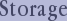

Caching Schemes
Automatic
None
Path Traversal Schemes
Follow Properties
Close
Follow all Properties
Path Traversal Options
Max. Nodes Retrieved:
default
100
200
300
400
500
Max. Nodes Traversed (Crawled):
default
1
2
3
4
5
6
7
8
9
10
Open session
Save session
Local RDF Resource
Browser settings
About RDF browser
XSLT stylesheet path:
Show pending AJAX calls
Show HTTP errors
<a>++ behavior:
Activate on hover
Activate when clicked
Scan Browsing history? (works only in Gecko-based browsers)
OpenLink RDF Browser
Version:
N/A
Built using
OpenLink Ajax Toolkit (OAT)
OAT version:
N/A

Check all
Uncheck all
Purge storage
permalink

 Purge storage
Purge storage